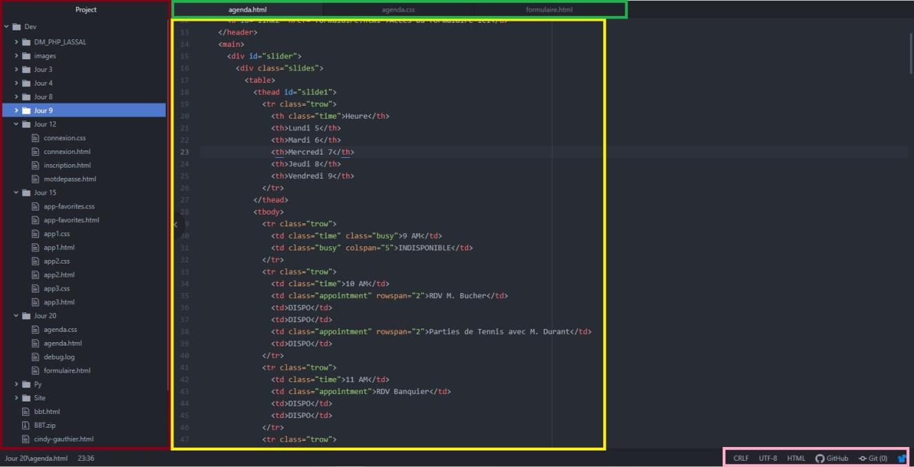

Visual Code Studio


La partie en rouge affiche l'arborescence de votre projet. Elle ne s'ouvre que lorsque vous importez un dossier complet
La partie centrale en Jaune affiche votre code
La partie en rose en bas à droite permet de savoir le langage saisi et permet la publication sur git.
Enfin la partie en haut en vert, indique les différents fichiers que vous avez ouvert sous forme d'onglets.